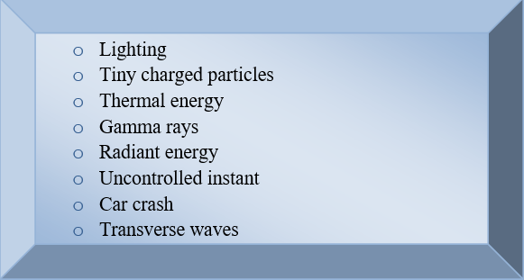
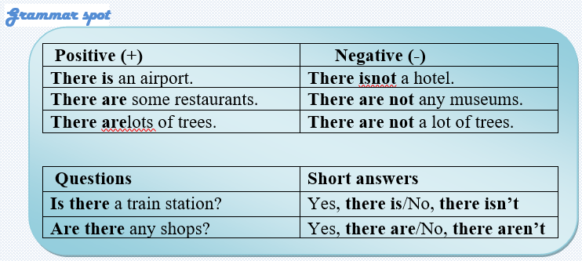
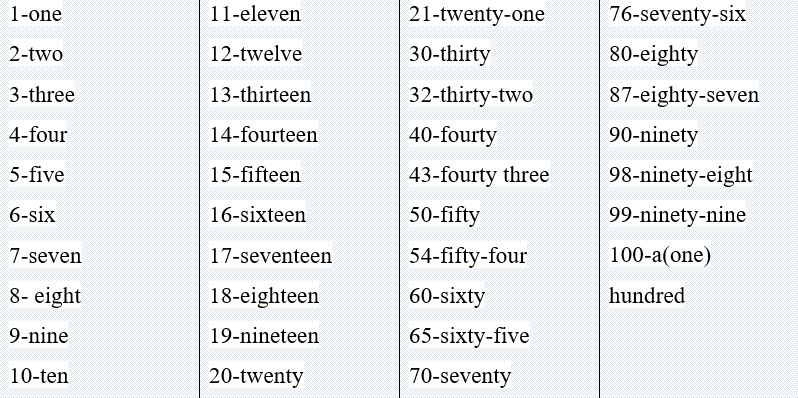

Kinetic energy is the motion of waves, electrons, atoms, molecules, substances, and objects.
Radiant energy is electromagnetic energy that travels in transverse waves. Radiant energy includes visible light, x-rays, gamma rays, and radio waves. Light is one type of radiant energy. Sunshine is radiant energy, which provides the fuel and warmth that make life on earth possible.
Thermal energy, or heat, is the energy that comes from the movement of atoms and molecules in a substance. Heat increases when these particles move faster. Geothermal energy is the thermal energy in the earth.
Motion energy is energy stored in the movement of objects. The faster they move; the more energy is stored. It takes energy to get an object moving, and energy is released when an object slows down. Wind is an example of motion energy. A dramatic example of motion energy is a car crash—a car comes to a total stop and releases all of its motion energy at once in an uncontrolled instant.
Sound is the movement of energy through substances in longitudinal (compression/rarefaction) waves. Sound is produced when a force causes an object or substance to vibrate. The energy is transferred through the substance in a wave. Typically, the energy in sound is smaller than in other forms of energy.
Electrical energy is delivered by tiny charged particles called electrons, typically moving through a wire. Lightning is an example of electrical energy in nature.
Task1Skills development
Make up sentences using the words from the text.

Task2 Reading
Complete the sentences with ideas from the text.
Kinetic energy is the motion of…………………………………………….
Radiant energy includes…………………………………………………….
Heat increases when these particles……………………………………….
Geothermal energy is……………………………………………………….
……………………………………………. is an example of motion energy.
The …………………….in sound is smaller than in other forms of energy.
Task3 Skillsdevelopment
1. Energy helps our bodies grow and_____________.
a) Ourmindswork
b) Ourhandswork
c) Ourheartswork
2. Energy is defined as the ability________________.
a) Tocollectsunrays
b) To produce, change or do work
c) To turn generators and produce electricity
3. There are many forms of energy, but they all fall into______________.
a) Twocategories- potentialorkinetic
b) Three categories- nuclear, potential and kinetic
c) Three categories-chemical, potential, mechanical
4. Chemical energy is the energy______________ in the bonds of atoms and molecules.
a) built
b) placed
c) stored
5. Electrons moving through a wire are called___________________.
a) heat
b) lightning
c) electricity
6. Radiant energy is electromagnetic energy that travels_______________.
a) in parallel waves
b) in longitudinal waves
c) transverse waves
7. Sound is produced when a force causes an object or substance
a) to collect
b) to stay still
c) to vibrate
8. Electrical energy is delivered by tiny charged particles called_________
a) Protons
b) Electrons
c) Molecules

Task4 Listening
a) Listen and learn the numbers.

b) Listen carefully and circle the correct numbers.
1. The student from New York bought (50 - 15) new books last week.
2. My uncle George lives at (13 - 30) King’s Road.
3. Mr. Johnson was (40 - 14) minutes late for his lecture.
4. It took (16 - 60) hours to finish his work.
5. Mary finished the test in (17 - 70) minutes.
6. My friend Alan lost (19-90) pounds on the first day of class.
7. I paid (80 - 18) pounds for that coat.
8. He lives at (5062 - 1562) Green Street, York.
9. Her address is (3040 -1340) Farm Street, Brighton.
10. We bought (14 - 40) CDs last month.
Task5 Writing
☑️ Learn the given lexical units.
☑️ Work in groups and explain the meanings of the given lexical units.
☑️ Try to use them in sentences.
Read the case and give some solutions.
Wind is among the fastest growing power source in the world, the technology is being developed rapidly and wind power is supplying significant shares of the energy in some areas of the world.
Sound emissions of wind turbines can be subdivided into mechanical and aerodynamic sound. Mechanical noise from the gearbox and generator has been virtually eliminated. Therefore, the turning blades are the main sound source. However, changes in blade design and operation can reduce this. Compared to road traffic, trains, construction activities and many other sources of industrial noise, however, the sound generated by wind turbines in operation is low.
In this regard, people’s negative attitude brings the most important challenge of installing a wind turbine.
Suggest some ways to change people’s attitudes towards wind turbines positively and make them believe sound emissions of turning blades are lower than they expect.
What is the problem?
How serious is this situation?
What is the cause of this problem?
How it is successfully solved?
How should it be solved?
Can you present some tips on how to reduce the noise coming from wind turbines?